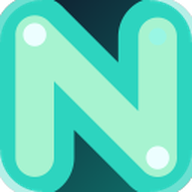

在页面上自主操作
点击按钮、填写表单、切换下拉、等待异步元素、跨页面跳转。执行过程逐步展示，出错可回看每一步的入参与返回。
get_page_info→click_element→type_text→✓ 完成
NeonAgent 住在你的 Chrome 侧边栏里。它读懂当前页面，自己拆步骤、调用工具，完成点击、输入、翻译、整理与提交——一句自然语言，换来一件完成的事。
注意力是稀缺资源。真正拉开差距的，不是工作更长时间，而是能否长时间不被打断地处理一件难事。
把重复的查找、复制、整理交给工具，人才有余力留在难题里。这也是自动化真正值得投入的地方——不是为了快，而是为了不被打断。
衡量的方式同样重要：一天结束时有几个 90 分钟不被打断的区块，比处理了多少条消息更能说明问题。
每次任务都走同一条链路：看清页面 → 拆出步骤 → 调用工具 → 把结果落到页面上。过程实时可见，你随时可以喊停。
通过内容脚本读取 DOM、正文、表单与结构，必要时截图理解画面。
read_page_content
模型用 OpenAI 兼容的 function calling 规划工具序列，而非盲目试错。
tool_calls
点击、输入、选择、滚动、等待元素、跳转——45 个工具按需加载。
click_element
答案写回页面或侧边栏，成功的流程可存成技能，下次一键复用。
create_skill
不是功能清单堆砌，而是每天都会用到的几件事。
点击按钮、填写表单、切换下拉、等待异步元素、跨页面跳转。执行过程逐步展示，出错可回看每一步的入参与返回。
按段落串行翻译，可双语对照写回页面；双击单词看释义，划选一段即时出译文。
偏好、站点特征、操作经验自动沉淀，新会话开局就带着上下文。超过 50 条可一键压缩。
把跑通的多步流程存成技能，支持 Markdown 导入导出，团队之间可以直接共享。
用 JavaScript 给它加新工具，在受控沙盒里运行，可调用外部接口、处理复杂数据。
单次、间隔、每日、每周四种调度，让巡检、汇总、提醒之类的事自己发生。
基于浏览器性能数据列出页面 API 请求，按域名、路径、状态码聚合，找出最慢和最大的接口；点击之后有没有真的触发请求，一等就知道。
内置预设供应商自动带出 Base URL，也可手动添加任何 OpenAI 兼容接口。主模型与翻译模型可以分开配置，思考强度四档可调。
API Key 保存在浏览器本地存储中，请求直接发往你填写的地址，不经过任何中间服务。
推荐直接从应用商店安装；需要改代码或本地开发时，也可以从源码构建。
一键安装、自动更新，不需要 Node.js 和命令行。装好后在侧边栏填入你的模型接口就能用。
在 Chrome 应用商店安装需要支持侧边栏的新版 Chrome。装好后在设置里填入模型接口即可开始。

免费 · 开源 · 自带密钥git clone https://github.com/fredliu168/NeonAgent.git
cd NeonAgent
npm install
npm run build打开 chrome://extensions，开启「开发者模式」，点击「加载已解压的扩展程序」，选择构建产物目录。
首次加载后，点击工具栏图标即可打开侧边栏。
在设置页新增供应商，填入 Base URL、API Key 与模型名称，然后在输入框里发出第一个指令。
“读一下这个页面，把要点整理成三条，存成笔记。”
项目基于 Chrome Side Panel API，需要支持侧边栏的新版 Chrome（或同内核浏览器）。可以直接从 Chrome 应用商店安装，也可以从源码构建后用「加载已解压的扩展程序」在本地加载。
可以。设置页支持新增任意 OpenAI 兼容接口，内置 Kimi、MiniMax、DeepSeek、火山引擎、硅基流动预设。主模型、翻译模型、Temperature、Max Tokens 与思考强度都可分别调整。
只有模型处理所需的页面内容会发送到你自己配置的接口地址。配置、会话、记忆与技能保存在浏览器本地存储中，不经过第三方服务器。请同时了解你所选模型供应商的数据政策。
每个工具调用都会在侧边栏逐步展示，你可以随时点停止中断。定时任务与自动解题属于需要显式开启的开关，默认关闭。
普通的侧边栏只能「说」。NeonAgent 拥有作用于当前页面的一组工具，能读写 DOM、模拟交互、操作表单，因此可以真的把事情做完，而不是只给出建议。
留下需要判断力的那部分给自己。